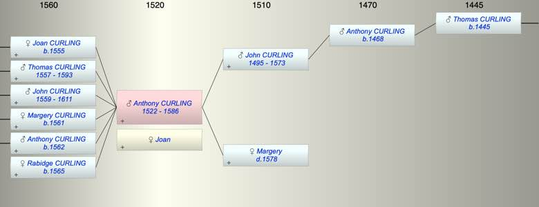

| [Index] |
| Anthony CURLING (1522 - 1586) |
|  |
| b. abt 1522 at St Laurence |
| +. Joan |
| d. 1586 at St Laurence aged 64 |
| Parents: |
| John CURLING (1495 - 1573) |
| Margery ( - 1578) |
| Siblings (3): |
| Robert CURLING (1520 - 1586) |
| William CURLING (1525 - 1582) |
| Sybil CURLING (1530 - ) |
| Children (6): |
| Joan CURLING (1555 - ) |
| Thomas CURLING (1557 - 1593) |
| John CURLING (1559 - 1611) |
| Margery CURLING (1561 - ) |
| Anthony CURLING (1562 - ) |
| Rabidge CURLING (1565 - ) |
| Grandchildren (14): |
| Joan SANDER, Anthony CURLING (1580 - ), John CURLING (1581 - ), Marryan CURLING (1590 - ), Thomas CURLING (1588 - 1589), Mary CURLING (1592 - ), Godly CURLING (1594 - ), Margery CURLING (1596 - ), WIlliam COPPIN (1589 - ), Suzanna COPPIN (1592 - ), Stephen COPPIN (1596 - ), Anthony CURLING (1589 - ), John CURLING (1591 - ), William CURLING (1592 - ) |
| Events in Anthony CURLING (1522 - 1586)'s life | |||||
| Date | Age | Event | Place | Notes | Src |
| abt 1522 | Anthony CURLING was born | St Laurence | |||
| abt 1555 | 33 | Birth of daughter Joan CURLING | |||
| abt 1557 | 35 | Birth of son Thomas CURLING | |||
| abt 1559 | 37 | Birth of son John CURLING | |||
| abt 1561 | 39 | Birth of daughter Margery CURLING | |||
| 1562 | 40 | Birth of son Anthony CURLING | Note 1 | ||
| abt 1565 | 43 | Birth of daughter Rabidge CURLING | |||
| 1573 | 51 | Death of father John CURLING (aged 78) | St Laurence | not found | |
| 1578 | 56 | Death of mother Margery | St Laurence | bur 9 March 1578 at SL. | |
| 1586 | 64 | Anthony CURLING died | St Laurence | Note 2 | |
| Death of wife Joan | 1582 or 1588 at St L? | ||||
| Note 1: bap at St L 13 Feb 1562/63 ex MW & MB |
| Note 2: buried 26 Aug 1586 at St L ex FMP PR |
| Personal Notes: |
| WIll dated 27 Dec 1580 proved 6 Oct 1586 in which he distributed his houses and land bewteen his children |
| Created on a Mac™ using iFamily for Mac™ on 8 Oct 2023 |